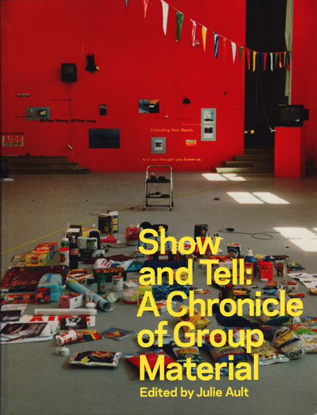
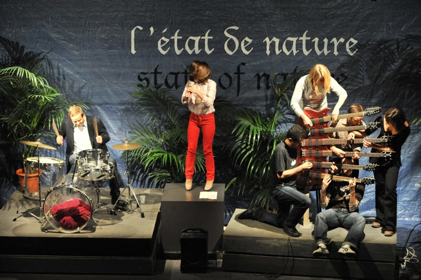
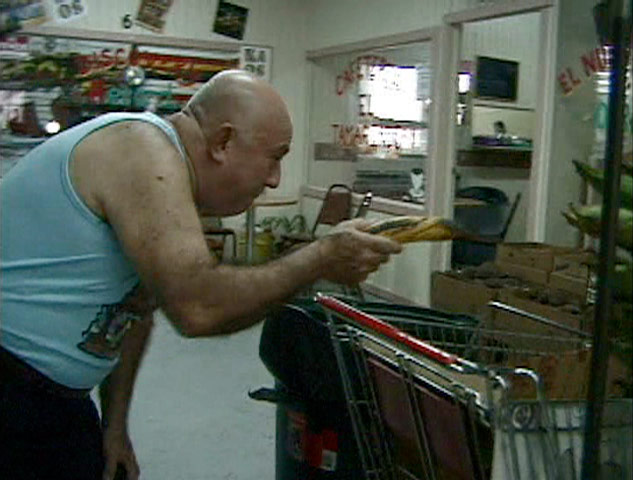
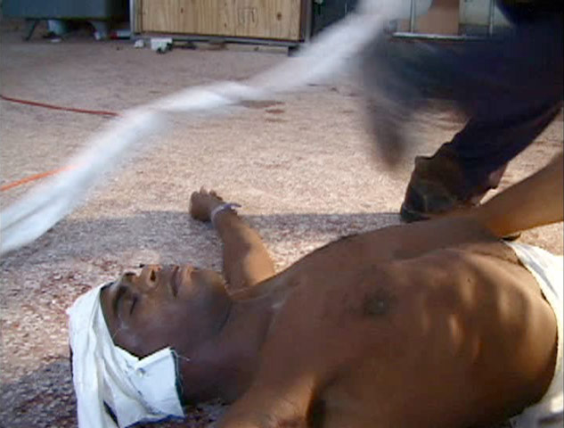
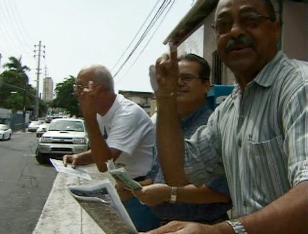
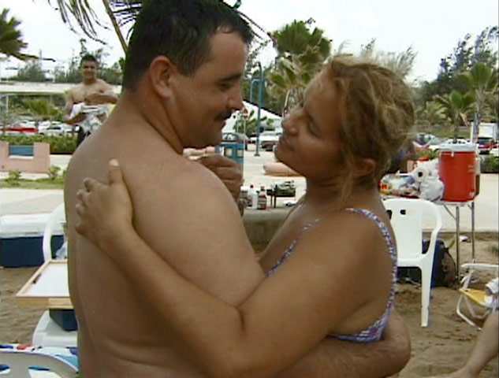
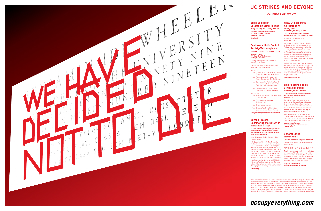

Telic Arts Exchange
951 Chung King Road
Los Angeles, CA 90012
[map]

Thursday night: attempting contact with the financial Super Entity
On February 2, beginning around 8pm, preliminary shamanic voyaging commences towards future experimental contact with the financial Super Entity ( http://goo.gl/bqOqh ), a very real etheric octopus native to the imaginary and mercurial mountain ranges of the contemporary stock market. All participants are welcome (with true intention) and strongly encouraged to fast for 24-48 hrs, prepare with accompanying sleep deprivation if possible and carefully note any related omens in their dreams as Thursday approaches . Lab work may include, but is not limited to, trance-work, Salvia, sound, projection and/or incense made from ground debit cards. see also: http://www.derivativesanddemonology.tumblr.com

Julie Ault - Friday, December 10 at 8pm
A presentation and discussion with Julie Ault based on the recent publication Show & Tell: A Chronicle of Group Material.
Friday, December 10 at 8.p.m,
The Public School - Los Angeles
951 Chung King Rd.
Los Angeles, CA 90012

Show & Tell: A Chronicle of Group Material
Edited by Julie Ault. Essays by Doug Ashford, Julie Ault, Sabrina Locks, Tim Rollins.
Published by Four Corners Books, London, 2010
In 1980, the artist collaborative Group Material opened a storefront at East 13th Street on New York's Lower East Side, from which they launched a program of socially engaged exhibitions and events. Group Material's original members—which include Julie Ault, Patrick Brennan, Tim Rollins, Beth Jaker, Mundy McLaughlin, and Marybeth Nelson —came from backgrounds in feminism, Marxist theory, design and popular culture, and curated exhibits reflecting this eclecticism, such as It's a Gender Show and The People's Choice—a collection of everyday objects (wedding photos, dolls, even a cigarette-pack collage) gathered from people living on their block. Subsequently deciding not to maintain a space, from 1982 on, the group organized projects in existing alternative and mainstream art institutions and utilized distribution forms such as billboards, newspapers, and public transit advertising. Group Material's projects radically overhauled curatorial thought, setting art alongside artifacts, documentary material and storebought objects, within exhibitions that were oriented around topical social concerns. Projects included Primer (for Raymond Williams), Artists Space, 1982, Subculture, IRT Subway Trains, 1982, Americana, 1985 Whitney Biennial, Inserts, Sunday New York Times, 1987, Democracy, Dia Art Foundation, 1988, and AIDS Timeline, Berkeley University Art Museum, 1989.
Show & Tell is the first monograph on Group Material. In keeping with the methods and principles used by the collaborative, the book charts the group's activities, drawing heavily from Group Material’s archive, including original documents, photographs, drawings, correspondence, artifacts, anecdotal information and texts. It includes essays by three long-term members.
Julie Ault is an artist and writer who often assumes curatorial and editorial roles as forms of artistic practice. Ault is one of the cofounders of the artists collaborative Group Material (1979–1996), which explored the relationships between art, activism, and politics. Ault’s exhibitions include: No-Stop City High-Rise: a conceptual equation, in collaboration with Martin Beck, for the 29th Bienal de São Paulo; the exhibition design for Changing Channels: Artists and Television, 1963–1985, Museum Moderner Kunst, Vienna, 2010, also with Beck; and Wet and Wild: The Spirit of Sister Corita, Signal, Malmö, 2007. Her edited and authored publications include: Show and Tell: A Chronicle of Group Material (2010); Where the Lions Are (2009), in collaboration with Danh Vo; Felix Gonzalez-Torres, (2006); Come Alive: The Spirited Art of Sister Corita (2006); and Alternative Art New York 1965–1985 (2002). Ault has taught at numerous institutions including: Ecole supérieure d’art visuel, Geneva; University of California at Los Angeles; Center for Curatorial Studies, Bard College, Annandale-on-Hudson; and Malmö Art Academy; and is currently a PhD candidate in Visual Art at Malmö Art Academy, Lund University.
Thanksgiving Eve: Matteo Pasquinelli on Cannibalism
You are invited tonight (the day before Thanksgiving) at 7pm for a discussion about cannibalism with Matteo Pasquinelli, who is visiting from Berlin. Our discussion will revolve primarily around these two texts:
- "The Cannibalist Manifesto" by Oswald de Andrade (http://www.mediafire.com/?w2znywhiz3v)
- "Anthropophagic Subjectivity" by Suely Rolnik (http://ifile.it/0erq2ab)
The conversation will be followed by a dinner in which Matteo will prepare several cactus dishes. Please bring a dish or a drink that responds to the topic!
More about Matteo:
Matteo Pasquinelli is a writer, curator and researcher. He completed his doctorate at Queen Mary University of London with a thesis on the new forms of conflict within knowledge economy and cognitive capitalism. He wrote the bookAnimal Spirits: A Bestiary of the Commons (2008) and edited the collectionsMedia Activism (2002) and C’Lick Me: A Netporn Studies Reader (2007). He writes and lectures frequently at the intersection of French philosophy, media culture and Italian post-operaismo.
A Constructed World: How to be in a group / One monkey don't stop no show
You are invited to a class at The Public School this weekend:
How to be in a group
facilitated by Geoff Lowe from A Constructed World
Saturday at 5pm
http://la.thepublicschool.org/class/2856
Afterwards, we'll have a small opening reception for the new
show at Distributed Gallery:
A Constructed World
present
One monkey don't stop no show
opening at 7pm

A Constructed World, Geoff Lowe and Jacqueline Riva, say the reason they began working together was to overcome the cultural loneliness of working as an isolated artist. They have been using not-knowing, uncertainty, absences. text and speech, in the company of others, to make a civic work of collection. These attitudes are reflected in events and performative works that include people from diverse backgrounds and levels of experience. A Constructed World's is a shapeshifting practice that is organized from Paris where they live.
"Form+Code" book launch / Future of the Public School
This weekend, we'll be reopening our space at 951 Chung King Road with two events that we're very excited about: the Form+Code book launch and a class called Future of the Public School.
Form+Code book launch party, 5-7pm on Saturday, September 4
Three years ago (during The Fundraising Show) Casey Reas and Chandler McWilliams hosted a workshop called "Form+Code." Now, Form+Code in Design, Art, and Architecture has been published by the Princeton Architectural Press and we'll have a little book launch party to celebrate. Champagne and snacks will be served; books will be on hand; and there will be a toast at 6:30 to thank many of the book's contributors who will be in attendance.
Future of the Public School class, 12-4pm on Saturday (September 4) and Sunday (September 5)
On both afternoons this weekend, we will be discussing the "Future of the Public School" and continuing some of the conversations from "The UC strikes and beyond" and "Continental Drift / Control Society / Metamorphosis". We're fortunate that Brian Holmes will be back in Los Angeles and proposed the class, which will "look at the cultural roots of the current university crisis, and in that light, to explore the role that experiments like The Public School could play in re-imagining education."
The class will meet on both Saturday and Sunday from noon to 4pm. The two texts that Brian recommended are listed below, but if anyone has additional suggestions, you can link to them in the comments of the webpage for Future of the Public School or upload them to the issue on AAAARG at http://aaaaarg.org/node/16709
Christopher Newfield, Unmaking the Public University: The Forty-Year Assault on the Middle Class (esp. chapters 1-3, 5 and 8)
Robert Samuels, New Media, Cultural Studies and Critical Theory after Postmodernism: Automodernity from Zizek to Laclau (esp. chaps 1, 5, 6, 8 and 9)
There is nothing less passive than the act of fleeing
The Public School is organizing a 13-day seminar, meeting each day at a different location in Berlin. This seminar takes the form of an open reading group, where the texts discussed each day resonate with the site selected. On 18 July The Public School and The Office will host an event to be held at Salon Populaire. The day will unfold as a series of participatory conversations and workshops.
The first meeting will be Sunday, July 4, with a discussion of the Tiqqun publication, Introduction to Civil War (sections 3 and 4) at the Island of Youth in Treptower Park.
If you aren't in Berlin but would still like to join the reading group, just reply to this email and we'll add you to the email discussion list (but be prepared for as many messages about logistics and weather as about the topics of the day!).
Deadlock: perpetual war, failing economies, the crumbling of education, capitalist realism, our environment in ruin, hostility everywhere.
Resistance? Confrontation? Insurrection?
Exodus: silence, autonomy, occupation, withdrawl, invisibility, friendship.
Organized by Sean Dockray, Caleb Waldorf and Fiona Whitton
day 1 (INSEL DER JUGEND IN TREPTOWER PARK)
INTRODUCTION TO CIVIL WAR [EXCERPTS]
TIQQUN
day 2 (LEIPZIGER PLATZ)
SPECULATIONS ON THE STATIONARY STATE
GOPAL BALAKRISHNAN
day 3 (THIS IS A SECRET)
THE FRIEND
GEORGIO AGAMBEN
day 4 (TRAFFIC ISLAND AT TU ON ERNST REUTER PLATZ)
SUPPORT, PARTICIPATION, AND RELATIONSHIPS TO EQUITY
CELINE CONDORELLI + EYAL WEIZMAN
THEORY OF THE QUASI-OBJECT
MICHEL SERRES
day 5 (TEMPELHOF AIRPORT)
POLITICS OF THE COMMON
MICHAEL HARDT
LIFE IN LIMBO
TURBULENCE EDITORS
day 6 (FUNKHAUS NALEPASTRASSE)
ANIMAL SPIRITS: A BESTIARY OF THE COMMONS [EXCERPT]
MATTEO PASQUINELLI
day 7 (RATHAUS SCHÖNEBERG)
COMMUNIQUE FROM AN ABSENT FUTURE
RESEARCH AND DESTROY
PROLEGOMENA TO ANY FUTURE PHILOSOPHY
NATHAN BROWN, MARIJA CETINIĆ, GOPAL BALAKRISHNAN, AARON BENANAV, JASPER BERNES, CHRIS CHEN, JOSHUA CLOVER, MAYA GONZALEZ, TIMOTHY KREINER, LAURA MARTIN, JASON SMITH, EVAN CALDER WILLIAMS
INTELLECTUALS AND POWER
MICHEL FOUCAULT + GILLES DELUEZE
day 8 (THE END OF THE A102)
VIRTUOSITY AND REVOLUTION: THE POLITICAL THEORY OF EXODUS
PAULO VIRNO
day 9 (ROUSSEAU-INSEL IN THE TIERGARTEN)
SLOUCHING TOWARDS BETHLEHEM
JOAN DIDION
ANALYTICON (FROM SEMINAR XVII)
JACQUES LACAN
THE NEUTRAL (EXCERPT)
ROLAND BARTHES
day 10 (BUS 200)
QUITTING: A CONVERSATION WITH ALEX KOCH ON THE PARADOXES OF DROPPING OUT
STEPHEN WRIGHT + ALEX KOCH WITH A RESPONSE BY BRIAN HOLMES
THE SCENE OF A FLIGHT*
GEORGES PEREC
BOREDOM
SIGFRIED KRACAUER
day 11 (STRANDBAD WANNSEE)
TO HAVE DONE WITH THE MASSACRE OF THE BODY
FELIX GUATTARI
THE AFFECTIVIST MANIFESTO: ARTISTIC CRITIQUE FOR THE 21ST CENTURY
BRIAN HOLMES
THE CITY IN THE FEMALE GENDER
LIA MAGALE
day 12 (TEUFELSBERG LISTENING STATION)
READY-MADE ARTIST AND HUMAN STRIKE: A FEW CLARIFICATIONS
CLAIRE FONTAINE
INVISIBLE MAN (PROLOGUE)
RALPH ELLISON
day 13 (APPARTEMENT)
WHO CARES (EXCERPT)
CREATIVE TIME, DOUG ASHFORD, MODERATOR
18 JULY, EVENT AT SALON POPULAIRE: THERE IS NO NOW, NOW
HOSTED BY THE PUBLIC SCHOOL & THE OFFICE
Beatriz Santiago Muñoz at the Distributed Gallery
Telic is excited to be exhibiting Archivo (2001) by Beatriz Santiago Muñoz at the Distributed Gallery this summer.
"A series of re‐enacted historical events with social and political significance in Puerto Rico are performed and improvised by various non-actors. The videos were shot in a very improvised way, without rehearsing or deciding beforehand in which way the body would fall or who would play whom. Various groups and individuals improvise performances of the death of a notorious killer, or the squatter-police confrontation that took place in Vila Sin Miedo. In each case, there is something trivial or significant that ties the person to the memory. In the case of Villa Sin Miedo, it is the first generation that grew up in Villa Sin Miedo who performs the event from what they have been told by their parents. In other cases, passerby, or people engaged with the place in various ways improvise a performance of the event."

Bicicleta at Ooga Booga

Ebanistas at The Public School

Hipodromo at Via Cafe

Escambron at Fong's
Beatriz Santiago Muñoz was born in San Juan, Puerto Rico, in 1972, where she continues to live and work.
March 4th at the Distributed Gallery
In conjunction with Brian Holmes' participation in "Continental Drift / Control Society / Metamorphosis" on February 27- 28, the Distributed Gallery will be showing videos from the March 4th protests centered on public education. At each one of the four video locations, one sees footage from near one of the University of California campuses, where students, faculty, and staff have spilled out onto the roads, highways, and other transportation infrastructure. By walking between Distributed Gallery locations, one walks across the state of California - from Berkeley to Irvine, for instance - to see this simultaneous expression of a growing movement against the privatization of education.
UC Davis at Via Cafe
UC Santa Cruz at Ooga Booga
UC Berkeley at The Public School
UC Irvine at Fong's
Letter from Brian Holmes
Dear friends -
Greetings, this is just a note to say how much I'm looking forward to meet everyone who will participate in the upcoming sessions in Southern California. All those I've been in touch with seem to be taking it as a chance to reflect on the current political and economic situation and on the shocks affecting cultural and intellectual production - which is exactly the point. I'm committed to the project of self-organized seminars and also to critical insertions in institutional contexts, and I really appreciate the enthusiasm that has been put into preparing these events. Thanks in advance to everyone who has been organizing: Zen Dochterman, Cara Baldwin, Jason Smith, Sean Dockray, Liz Glynn, Solomon Bothwell, Christina Ulke, Marc Herbst, Robby Herbst, the Journal of Aesthetics & Protest and the Public School, as well as a number of others in various corners of the UC system.
Continental Drift has always been about confronting research programs, artistic experiments and activist inventions with the intensifying pace of change in society. Four initial meetings organized in New York in collaboration with Claire Pentecost and the 16 Beaver Group were devoted to analyzing and also feeling out the major shifts brought on by neoliberal globalization after 1989, and especially, by the grotesquely failed bid for US empire. A further event in Zagreb, hosted by the WHW curatorial collective, tried to geographically shift the perspective on those issues. Today a long wave of economic growth and new technological rollout, begun in the early 90s, has clearly broken and brought a full-fledged crisis to the heart of the capitalist world-system, which is also the country we live in. The collapse of state budgets and the California education crisis is right in the middle of a much larger development, which will undoubtedly mark a turning point in our society and in the world. I've started a new research program to look into this:
http://brianholmes.wordpress.com/2009/10/25/four-pathways-through-chaos
What I bring to the table is only a small part of a collaboratively organized discussion, among people whose approaches and goals are often quite different. The Public School is developing a mode of collective self-education that could become very significant as the institutions freeze up in the security panic and the budget collapse. Building up this form of careful collaborative discourse, we can also start changing the other, looser or more formalized contexts in which we work. Although it is rather threatening and in no way easy to face, I see the economic crisis as a chance to spark changes that our society has been putting off for decades. We will try to measure both the depth of that inertia and the possibilities of the present, in a way that respects everybody's real situation and their voice, while hopefully opening up new territories for alternative and oppositional practice.
see you soon, Brian
Continental Drift / Control Society / Metamorphosis

On the weekend before the March 4th state-wide UC strike, we invite you to participate in a two-day theory convergence, a “Continental Drift” seminar with the Paris-based theorist, Brian Holmes. Past Drifts has taken a variety of forms in its manifestations at 16 Beaver (2004-2006) in New York, or through the Midwest’s radical culture corridor (2008); and here in Los Angeles it will confront a California whose infrastructure is crumbling, whose government is disfunctional, and whose public education is in crisis from the space of an autonomous education alternative.
Although this Continental Drift is situated here, in a time of occupations and walkouts, it will connect the changes occurring at our universities to the emergence of a neoliberal control society over the past few decades.
The structure of the weekend will be two-days in four parts. Most parts will be structured as participatory conversations, guided by an interlocutor; togetherwe will explore these themes.
On the first day, we try to understand the massive economic and psychological shifts that have occurred since the end of the 1960’s.
And on the second day, we will locate possible territories for resistance, autonomy, or invention. Continuing in the spirit of our collective conversations so far, we are leaving the lecture-Q&A format aside for themed discussions.
Text resources associated with these discussions are being posted to AAAARG.ORG
day 1. saturday, february 27
control society
12 pm: disassociation (psychological effects/desire)
facilitators: Liz Glynn and Marc Herbst
2 pm: financialization & the UC crisis
facilitators: Aaron Benanav and Zen Dochterman
4 pm occupation/ collective speech
facilitators: Cara Baldwin, Nathan Brown, Maya Gonzalez, Evan Calder Williams
7 pm: discussion day one
facilitators: Brian Holmes, introduced by Solomon Bothwell
--
day 2. sunday, february 28
metamorphosis
12pm: Autonomous Space
facilitators: Hector Gallegos, Robby Herbst
2 pm: Precarity
facilitators: Christina Ulke, Sean Dockray
4 pm: Changing Classes
Brian Holmes Lecture
7pm: Sharable Territories/ Bifurcation
facilitators: Jason Smith, Ava Bromberg
--
Organized by Zen Doctherman, Cara Baldwin, Jason Smith, Sean Dockray, Liz Glynn, Solomon Bothwell, Christina Ulke, Marc Herbst, Robby Herbst